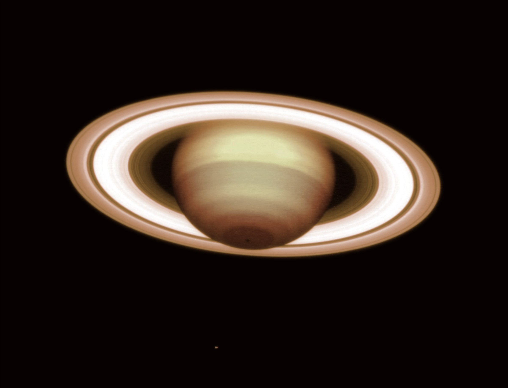

There is no single route.
Begin with the part of the room that catches your attention. Come back to an installation after you have seen it from the other side. The exhibition rewards a second look.

A little closer
Small groups, thoughtful guides, and time at the eyepiece. Make a little room for the extraordinary.
90-minute observing sessionsExplore this experience ↗
Gallery 01 / An immersive exhibition
An encounter with scale. A change of perspective.
A little room
to feel part of something bigger.
A world to walk through
Worlds in Motion turns the language of astronomy into an architectural experience. A suspended planet, a line of light, and the space around them become an invitation to move, notice, and look again.
The photograph above is a real near-infrared observation of Saturn from ESO’s Very Large Telescope. It introduces our imagined gallery concept: an invitation to explore a distant world through light, movement, and scale.
Chapter 01
Follow the ring around the room. A simple line becomes a horizon, a path, and a way to understand the space differently. This first chapter is about movement, repetition, and the pleasure of finding a pattern.
Begin with the part of the room that catches your attention. Come back to an installation after you have seen it from the other side. The exhibition rewards a second look.
Gallery hosts help visitors make connections through conversation. A question about the artwork can become a question about the way we see the world.
Explore with someone else and compare the details you find. Sometimes the most interesting part of an exhibition is the conversation it starts on the way home.
Your exhibition visit
Allow an hour to wander, or make the gallery the beginning of a longer evening.
The imagined gallery includes a step-free route, places to sit, and a quieter arrival option in the visit planner. All booking interactions on this site are local demonstrations.
Plan a gallery visit ↗A little less ordinary